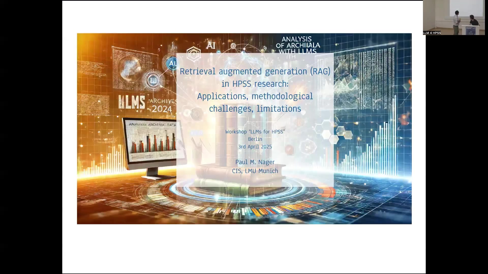
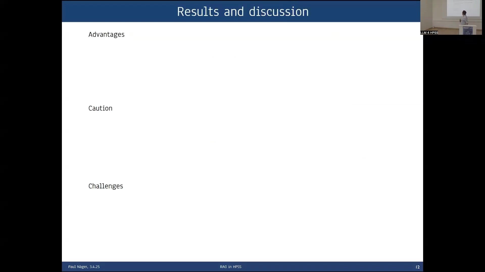

12 RAG Systems in Philosophy and HPSS
The presentation details the application of Retrieval Augmented Generation (RAG) systems to philosophical research and teaching, specifically within the Humanities, Politics, and Social Sciences (HPSS) domain. The core objective is to address limitations of standard Large Language Models (LLMs) when applied to disciplines requiring high linguistic and semantic accuracy and deep engagement with specific textual corpora. Standard LLMs face problems with access to full texts (despite potenti…
13 RAG Systems in Philosophy and HPSS
13.1 Overview
The presentation details the application of Retrieval Augmented Generation (RAG) systems to philosophical research and teaching, specifically within the Humanities, Politics, and Social Sciences (HPSS) domain. The core objective is to address limitations of standard Large Language Models (LLMs) when applied to disciplines requiring high linguistic and semantic accuracy and deep engagement with specific textual corpora.
Standard LLMs face problems with access to full texts (despite potential inclusion in training data), limited context windows, and attribution of information. RAG systems are proposed as a solution by providing explicit access to domain-specific data sources, augmenting prompts with retrieved relevant text chunks, and enabling source citation.
The presentation outlines typical philosophical research questions that require detailed textual analysis. It describes the standard LLM query process and contrasts it with the RAG workflow.
The RAG workflow involves a retrieval query to data sources (such as vector databases or APIs), retrieval of relevant text chunks (typically via semantic search, potentially hybrid or classic search), and augmentation of the LLM prompt with these chunks before generation. This process directly addresses the problems of access, limited context window, and attribution.
Potential applications in philosophy include didactic use (chatting with philosophical corpora for instructive questioning) and research use (looking up facts in handbooks, exploring unexamined corpora, finding passages for close reading, and directly finding detailed answers to research questions).
An example RAG system is presented using the Stanford Encyclopedia of Philosophy (SEP) as the data source. The system was developed through a qualitative study involving theoretically grounded trial and error to optimize performance for philosophical queries.
Key aspects of this study included model choices (generative LLM, embedding model), tuning hyperparameters (number of documents to retrieve (top-k), max input/output token length, chunk size and overlap), and addressing methodological challenges like retrieval semantic mismatch through reranking. Evaluation of results, particularly for complex, unstructured philosophical answers, is identified as crucial and requiring domain expertise.
The implemented SEP RAG system features a frontend with configuration options for generative model (e.g., gpt-4o-mini), prompt token limits, number of texts to retrieve, and persona. It includes a comparative setup displaying answers from the LLM alone versus the RAG system for qualitative evaluation and benchmarking.
The output also lists retrieved texts, their source files, section headings, distance metrics, token lengths, and inclusion status based on prompt limits.
A specific hyperparameter tuning example, chunk size, is discussed. Options explored included fixed word counts, paragraphs, and sections.
The study found that chunking into main sections yielded the best results for the SEP corpus, despite section lengths often exceeding the embedding model’s cutoff. This outcome is attributed to the highly systematic structure of the SEP, where section beginnings effectively summarize content. This highlights that effective chunking is corpus- and question-dependent.
Results indicate that RAG systems offer advantages in integrating verbatim corpora and domain knowledge, leading to more detailed answers and a dramatic reduction in hallucinations compared to standard LLMs. They also enable the citation of relevant documents supporting the generated answer. Overall, the RAG setup is identified as being very well suited for assisting in a wide range of scientific tasks.
However, several cautionary points are raised. RAG systems fundamentally require tweaking; appropriate settings for hyperparameters and methods are highly dependent on the specific corpus and the nature of the questions being asked. Evaluation is crucial and necessitates domain experts to define representative questions and expected answers. A key challenge is the decrease in answer quality when no relevant documents are found, requiring prompt adjustment.
Counterintuitively, RAG systems often provide worse results for widely discussed overview questions, such as inquiries about the central arguments against scientific realism, compared to more specific factual queries. A hypothesis for this phenomenon is that RAGs tend to focus on the local information present in the retrieved chunks. The prompt directs the model to answer based on this local information, which can inadvertently distract from a broader perspective. This suggests a need for prompt adjustments for different question types.
Ultimately, there is a need for more flexible systems, potentially agentic RAG systems, that can discern between different kinds of questions and adapt their strategy accordingly.
The discussion further explores challenges related to philosophical contentiousness and how RAG systems might represent diverse viewpoints, the potential for using LLMs as judges for evaluation, and the specific ways domain expertise influences RAG design, particularly in chunking and defining relevant arguments.
13.2 Introduction to RAG Systems

The presentation is delivered from the perspective of a philosopher of science who has engaged with the technical details of Large Language Model (LLM) systems. The focus is on applying these systems, specifically Retrieval Augmented Generation (RAG), within the domain of philosophy and the broader Humanities, Politics, and Social Sciences (HPSS).
A core requirement in philosophical research is a high degree of linguistic and semantic accuracy, demanding deep engagement with specific textual corpora.
Typical research questions in philosophy include inquiries such as “What is Aristotle’s theory of matter in the Physics?” or “Does Einstein’s idea of locality develop from his earlier to his later works?”, referencing specific periods and texts like his relativity works and the 1948 paper on Quantenmechanik und Wirklichkeit. While standard LLMs like ChatGPT can provide decent, differentiated answers to such questions at a general level, they present several problems for rigorous philosophical research.
Standard LLMs lack direct access to the full text of source corpora. Although texts may have been included in their training data, the models cannot explicitly retrieve or quote them accurately. This often leads to hallucination when specific quotes are requested.
While online search features can sometimes provide access, they are subject to limitations such as copyright restrictions, as encountered with papers like the EPR paper. The training mechanism of LLMs is designed to prevent verbatim learning, focusing instead on generalizable statistical rules of text production, which is counter to the philosophical need for direct engagement with original text sources and their fine-grained formulations.
Furthermore, standard LLMs have a limited context window, such as the 128,000 tokens available in ChatGPT-4, which is insufficient for processing large philosophical corpora. Finally, there is a significant attribution problem, as standard LLMs do not provide sources or citations for the claims made in their answers. RAG systems are presented as a suitable setup to address these specific problems.
13.3 RAG System Architecture and Problem Solving

The RAG system architecture is described as a setup capable of solving the identified problems with standard LLMs in philosophical contexts. The process begins with a user initiating a query through an application (APP).
The APP then sends a retrieval query to designated data sources. These data sources contain the appropriate corpus, such as Aristotle’s corpus or Einstein’s corpus, and can be implemented using technologies like vector databases or APIs. The retrieval mechanism typically employs semantic search to find relevant text chunks, although hybrid or classic search methods are also viable options.
The data sources return the retrieved chunks of text to the APP. The APP then augments the original LLM query by incorporating these retrieved chunks into the prompt.
This augmented query is sent to the LLM, which performs text generation based on the provided information. The LLM returns the generated answer to the APP, which finally delivers the answer to the user.
This RAG setup directly addresses the problems faced by standard LLMs. It solves the problem of access by providing explicit access to specific texts within the defined corpus, ensuring that the LLM works with the actual source material.
It mitigates the problem of the limited context window by providing only the most relevant text chunks to the LLM, effectively managing the input size within the model’s capacity. Furthermore, the RAG system solves the attribution problem by enabling the citation of sources for the provided text chunks, allowing users to verify the basis of the generated claims.
13.4 Applications in Philosophy

The general idea behind applying RAG systems in philosophy is to enable users to chat with philosophical corpora. This interaction style is similar to using ChatGPT but provides significantly more detailed domain knowledge and is grounded in a verbatim text basis from the specified corpus.
Didactic applications are a key area. RAG systems are useful for students approaching complex philosophical texts, such as Locke’s Essay Concerning Human Understanding.
They allow for repeated questioning, enabling students to start with general ideas and progressively delve deeper into specific details, like Locke’s epistemology or his theory of matter. This interactive process provides an instructive method for students to gain a deeper understanding of the texts.
Research applications are also emphasized. RAG systems are expected to be important for looking up facts in handbooks, serving functions previously performed by manually consulting books for orientation, remarks, or footnote information.
This addresses the unreliability of factual information obtained solely from standard LLMs and necessitates the development of high-quality RAG systems for reliable factual retrieval. Other research uses include exploring corpora that have not been extensively studied, efficiently finding specific passages for close reading, and potentially, in the future, directly finding detailed answers to complex research questions.
13.5 Example: Stanford Encyclopedia of Philosophy RAG System

An example RAG system was developed using the Stanford Encyclopedia of Philosophy (SEP) as the data source. The content of the SEP was prepared by scraping it into markdown format. The initial aim of this project was to create a useful tool for the philosophical community.
The development process evolved into a qualitative study employing theoretically grounded trial and error. An observation during the initial setup was that a standard RAG configuration, based on typical textbook descriptions involving only retrieval and generation components, produced poor answers.
These answers were found to be worse than those obtained by querying a standard LLM like ChatGPT directly without retrieval augmentation.
This led to an iterative improvement process involving significant tweaking and optimization. This included tweaking the choice of models, specifically selecting the appropriate generative LLM and embedding model.
Hyperparameters were also tuned, including the number of documents to retrieve (top-k), the maximum input and output token lengths, and the chunk size and overlap used for text processing. Furthermore, methodological complexities were added, such as implementing reranking mechanisms to address issues of retrieval semantic mismatch, where initially retrieved chunks might not be the most relevant.
The method for evaluating these improvements was theoretically grounded trial and error, assessing by which measures the answers improved. Sound evaluation standards were identified as crucial.
A key challenge in evaluating philosophical RAG systems is that the desired answers are typically free, unstructured text rather than simple atomic facts (like asking for Wittgenstein’s last place of living, which yields a city name). Evaluating complex propositions for their factual accuracy is not straightforward and requires significant domain expertise.
13.6 SEP RAG System Implementation

The implemented SEP RAG system consists of a frontend and a backend, which is written in Python code. The frontend provides a web interface with several configurable options.
Users can select the Generative Model to be used, such as gpt-4o-mini. There are settings for the Prompt Token Limit, including the maximum limit supported by the chosen model (e.g., 128000) and a configurable limit for the current session (e.g., 15000). The number of texts to retrieve, corresponding to the top-k value, is also configurable (e.g., 15). A Persona text area allows defining the desired behavior for the LLM, for instance, instructing it to act as “an expert philosopher” who answers “meticulously and precisely.”
The frontend includes an input field for the Philosophical Question, where users enter their query (e.g., “What is priority monism?”). A “Generate answer” button triggers the RAG process.
The output section is designed for qualitative evaluation, featuring a comparative setup. It displays the “Answer with LLM alone” as a benchmark on one side and the “Answer with RAG” on the other. The RAG answer includes source citation indicators, such as “[Text 0]”, linking parts of the answer to the retrieved texts. A “Benchmark” button is available for comparative evaluation.
Below the answers, a “Retrieved Texts Overview” table lists the texts found during the retrieval phase. This table includes columns for file names, section headings, distance metrics, token lengths (length_token for the chunk, total_token for the full section/file), and a flag indicating whether the text was included in the final prompt based on token limits. This table shows the article names and specific section headings that were retrieved and indicates which ones were utilized in the prompt and which were excluded due to prompt length constraints. The backend functionality is implemented in Python code, described as comprising a few thousand lines.
13.7 Hyperparameter Tuning: Chunk Size

Chunk size is identified as a key hyperparameter requiring optimization in RAG system development. Several options exist for defining text chunks.
One approach is using a fixed number of words, such as 500 tokens or words. This provides a clean criterion but disregards the inherent structure of the document, such as headings or sections. Alternative methods involve chunking by semantic units like paragraphs or sections, potentially considering different hierarchical levels of sections.
For the specific case of the SEP corpus, the optimization process revealed a surprising result: the best performance was achieved by chunking the text into its main sections, including their headings.
This finding was unexpected because the average length of SEP sections (approximately 3000 words) significantly exceeded the typical cutoff length of the embedding model used (512 words). Despite this discrepancy, chunking by main sections yielded superior results compared to smaller, fixed-size chunks or paragraphs.
A hypothesis for this surprising outcome is that the SEP documents are highly systematically ordered. The initial parts of each section often effectively summarize the main theme and key ideas. These crucial introductory segments likely fall within the effective context window of the embedding model, even if the entire section is much longer.
This suggests that the structure and organization of the corpus play a significant role in determining the optimal chunking strategy, and this approach might not be as effective for less structured or heterogeneous texts.
Future work is planned to explore the use of embedding models with longer context windows, such as Cohere Embed 3, to see if they further improve performance with larger chunks.
The key lesson derived from this optimization process is that effective chunking is not a one-size-fits-all solution; it highly depends on the specific characteristics of the corpus being used and the nature of the questions being posed.
13.8 Results, Discussion, and Challenges

The results and discussion highlight several advantages of RAG systems. They effectively integrate verbatim corpora and domain-specific or special knowledge, leading to more detailed answers and a dramatic reduction in hallucinations compared to standard LLMs.
RAG systems also enable the citation of relevant documents supporting the generated answer. Overall, the RAG setup is identified as being very well suited for assisting in a wide range of scientific tasks.
However, several cautionary points are raised. RAG systems fundamentally require tweaking; appropriate settings for hyperparameters and methods are highly dependent on the specific corpus and the nature of the questions being asked.
The evaluation of RAG systems is crucial and necessitates a representative set of questions along with expected answers. This process essentially requires domain experts, such as philosophers in this context, for both evaluation and initial setup, as the optimal configuration is specific to the domain, the type of corpus, and the kind of questions. A challenge remains regarding how to effectively evaluate RAG performance when dealing with unexplored corpora.
Several challenges are also identified. A decrease in answer quality occurs if no relevant documents are found during retrieval, indicating a need to adjust the prompt in such cases.
Counterintuitively, RAG systems often provide worse results for widely discussed overview questions, such as inquiries about the central arguments against scientific realism, compared to more specific factual queries. A hypothesis for this phenomenon is that RAGs tend to focus on the local information present in the retrieved chunks. The prompt directs the model to answer based on this local information, which can inadvertently distract from a broader perspective. This suggests a need for prompt adjustments for different question types.
Ultimately, there is a need for more flexible systems, potentially agentic RAG systems, that can discern between different kinds of questions and adapt their strategy accordingly.